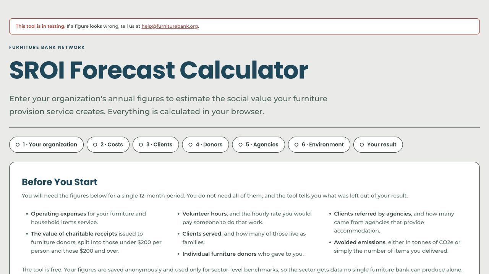

Forecast Tool · Methodology by Melek De-Wint
SROI Forecast Calculator
An online calculator built on Melek De-Wint's application of the Social Return on Investment methodology onto furniture banks across North America.
SROI (Social Return on Investment) looks beyond what an organization did to ask what value its work actually created. It asks who was affected, what outcomes followed, how much those outcomes mattered, and how much of that value the organization can reasonably claim.
A forecast based on model assumptions, not measured impact.
Read the case study